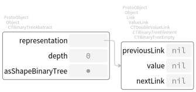

A free binary tree container is defined according to
Object subclass: #CTBinaryTreeAbstract
instanceVariableNames: 'representation'
classVariableNames: ''
package: 'Containers-BinaryTreeAbstract'
and its responsibility is to direct and manage objects of types
CTDoubleValueLink subclass: #CTBinaryTreeElement
instanceVariableNames: ''
classVariableNames: ''
package: 'Containers-BinaryTreeAbstract'
CTBinaryTreeElement subclass: #CTBinaryTreeEmpty
instanceVariableNames: ''
classVariableNames: ''
package: 'Containers-BinaryTreeAbstract'
CTBinaryTreeElement subclass: #CTBinaryTreeNode
instanceVariableNames: ''
classVariableNames: ''
package: 'Containers-BinaryTreeAbstract'
as actual representation for the underlying structure. The simpler container is the empty tree,
"CTBinaryTreeAbstractTest, protocol tests"
testCreation
^ self exportSlotsGraphOf: (self tree: { })

where
"CTBinaryTreeAbstract class, protocol requirements"
empty
^ self new yourself: [ :aTree |
aTree representation: aTree binaryTreeElementEmpty ]
In general, we use collections and then build trees out of them. On one hand,
using ArrayedCollection objects
"CTBinaryTreeAbstractTest, protocol tests"
testPushOrderedInterval
^ self exportSlotsGraphOf: (self tree: (1 to: 20) asArray)
where
"CTBinaryTreeAbstractTest, protocol tests"
tree: aCollection
^ aCollection asBinaryTree
"Collection, protocol *Containers-RedBlackSet"
asBinaryTree
^ self asBinaryTree: CTBinaryTreeAbstract
"ArrayedCollection, protocol *Containers-BinaryTreeAbstract"
asBinaryTree: aClass
^ aClass withArrayedCollection: self
and
"CTBinaryTreeAbstract class, protocol instance creation"
withArrayedCollection: aCollection
^ aCollection ifEmpty: [ self empty ] ifNotEmpty: [
self new yourself: [ :tree |
tree representation: (aCollection
bisect: [ :l :r |
l mergeBinaryTreeElement: r inBinaryTree: tree ]
baseBlock: [ :each | tree binaryTreeElementLeaf: each ]) ] ]
dispatches over
"CTBinaryTreeEmpty, protocol actions"
mergeBinaryTreeElement: aBTElement inBinaryTree: aBinaryTree
^ aBTElement
"CTBinaryTreeNode, protocol actions"
mergeBinaryTreeElement: aBTElement inBinaryTree: aBinaryTree
^ (Random seed: 13) fairCoin
ifHead: [
| link |
link := previousLink
mergeBinaryTreeElement: aBTElement
inBinaryTree: aBinaryTree.
aBinaryTree
leftBinaryTreeElement: link
value: value
rightBinaryTreeElement: nextLink ]
ifTail: [
| link |
link := nextLink
mergeBinaryTreeElement: aBTElement
inBinaryTree: aBinaryTree.
aBinaryTree
leftBinaryTreeElement: previousLink
value: value
rightBinaryTreeElement: link ]
by means of bisection
"ArrayedCollection, protocol *Containers-Essentials"
bisect: mergeBlock baseBlock: baseBlock
^ self
bisect: mergeBlock
from: 1
to: self size
baseBlock: baseBlock
"ArrayedCollection, protocol *Containers-Essentials"
bisect: mergeBlock from: low to: high baseBlock: baseBlock
| diff |
diff := high - low.
^ diff = 0
ifTrue: [
baseBlock value: (self at: high) "Because `high` equals `low`." ]
ifFalse: [
| middle left right |
middle := diff // 2 + low.
left := self
bisect: mergeBlock
from: low
to: middle
baseBlock: baseBlock.
right := self
bisect: mergeBlock
from: middle + 1
to: high
baseBlock: baseBlock.
mergeBlock value: left value: right ]
to finally build the tree. On the other hand, using Collection objects
"CTBinaryTreeAbstractTest, protocol tests"
testPushOrderedCollection
^ self exportSlotsGraphOf:
(self tree: (1 to: 20) asOrderedCollection)

where
"Collection, protocol *Containers-BinaryTreeAbstract"
asBinaryTree: aClass
^ aClass withCollection: self
and
"CTBinaryTreeAbstract class, protocol instance creation"
withCollection: aCollection
^ aCollection
inject: self empty
into: [ :aBinaryTree :each | aBinaryTree push: each ]
uses
"CTBinaryTreeAbstract, protocol adding"
push: anObject
| leaf |
leaf := self binaryTreeElementLeaf: anObject.
representation := leaf
mergeBinaryTreeElement: representation
inBinaryTree: self
repeatedly. The two cases above can be redone with shuffled collections, both
"CTBinaryTreeAbstractTest, protocol tests"
testPushShuffledInterval
| shuffled |
shuffled := (1 to: 20) asArray shuffleBy: (Random seed: 13).
self
assert: shuffled
equals: #( 8 16 20 3 6 5 4 19 7 12 2 10 11 9 13 18 17 15 14 1 ).
^ self exportSlotsGraphOf: (self tree: shuffled)

and
"CTBinaryTreeAbstractTest, protocol tests"
testPushShuffledCollection
| shuffled |
shuffled := (1 to: 20) asOrderedCollection shuffleBy:
(Random seed: 13).
self
assert: shuffled
equals: #( 8 16 20 3 6 5 4 19 7 12 2 10 11 9 13 18 17 15 14 1 )
asOrderedCollection.
^ self exportSlotsGraphOf: (self tree: shuffled)
respectively.